MineStrike 1.6 embeds Minecraft Java Edition gameplay in Counter-Strike 1.6 without modifying the engine binary. The Counter-Strike client library is closed-source. Its interface was recovered by static analysis of the shipped PE binaries and by instrumenting live calls, and it is extended through a proxy library that forwards all 42 exports. The server library is built from ReGameDLL_CS. The map de_dust2 is parsed, rendered and collided against by the modification itself. This allows any part of the original geometry to be excavated while the engine's movement behaviour is kept. That behaviour was checked against the engine on 4,000 randomized hull traces.
LivingEntity.travel; firework rockets boost the glide. The middle stretch is the third-person camera.The engine (hw.dll, HL25 build 10210) and the official Counter-Strike client (client.dll) are distributed only as 32-bit PE binaries. No source code or symbol files for either were used. Analysis proceeded in two stages.
Three purpose-written tools in tools/re/ parse the binaries directly. pe_exports.py reads the export directory. pe_info.py reads the section table and image base, and maps virtual addresses to file offsets. strings.py scans for printable strings with a regular-expression filter. Together they establish the exported entry points and their order, and the command names, console variables and error messages each binary contains.
The proxy library logs every call it forwards, with arguments, which shows the calling order and the data that crosses each entry point. On the server side, mc_msgtrace intercepts the engine's user-message functions (RegUserMsg, MessageBegin, Write*). It records every message sent to a client, so a working and a failing session can be compared message by message.
| Finding | Method | Consequence for the design |
|---|---|---|
The client exports the API-proxy entry point F. The engine passes it a function table with some slots already filled in: the destination-address and module-function conventions of APIProxy.h. | Export table; call logging | The proxy must call the original F on the engine's own buffer, then overwrite only the slots it wraps. Building a fresh table makes the engine fail to initialize. |
The client copies the engine function table during Initialize and registers its commands later, in HUD_Init, through that copy. | Call logging | The proxy swaps pfnAddCommand and pfnHookUserMsg only for the duration of the original Initialize. That is how slot1–slot10, invnext, invprev and buy are redirected to the hotbar. |
hw.dll maps the -game directory name to a Steam application ID: cstrike is 10, any other name is 70. | Strings; engine log | A separate mod directory fails Steam authentication. The modification is installed into a private copy of cstrike. |
The argument of HUD_Frame is the frame interval, not a timestamp. | Call logging | All client animation is driven by GetClientTime(). An earlier build froze because it treated the argument as a clock. |
The thirdperson command is registered but has no effect in this client build. | Strings; runtime test | The modification has its own camera, and wraps CL_IsThirdPerson so the engine draws the local player model. |
Esc is consumed by the engine's menu before HUD_Key_Event is called. | Call logging | IN_DeactivateMouse is wrapped and used as the signal to close the modification's screens. |
The renderer runs an OpenGL 4.6 compatibility context. Inside HUD_DrawNormalTriangles, program 0 is bound and the fixed-function matrices are valid. | GL state queries | The GLSL renderers draw in that callback, then restore the engine's state. |
The HL25 default configuration binds the right mouse button to +alt1 (IN_ALT1, bit 14), not +attack2. | Configuration files; input logging | The server treats both bits as the use action. Scripted tests that set IN_ATTACK2 had passed while real clicks did nothing. |
The server library mp.dll is built from ReGameDLL_CS, an open-source reimplementation of Counter-Strike's game library, with a Minecraft module attached through its hook chains: spawn, damage, death, think, item use and buying. Minecraft's rules were reimplemented from the behaviour of the corresponding Java Edition 1.21 classes. These include FoodData (food level, saturation, and an exhaustion threshold of 4.0), the attack-damage and attack-speed tables with cooldown, critical hits, sweep and knockback, and the armor and toughness damage formula. Elytra flight follows LivingEntity.travel, and explosions use the ray-cast model. One Minecraft health point is 5 Counter-Strike health points. The player inventory uses the slot numbering of InventoryMenu, plus one extra slot (46) for disposal. Inventory clicks are server-authoritative: the client sends only the slot, the button and the Shift state. The network delta description (delta.lst) is widened so that player flags, armor codes and firework boosts reach client-side prediction.
In classic mode, the engine loads a sealed, empty sky-box map. The modification loads de_dust2.bsp (BSP version 30) itself: 9,582 planes, 2,766 nodes, 8,321 clipnodes, 5,383 faces and 10 solid brush models.
Hull traces follow the engine's recursive hull check as implemented in ReHLDS, an open-source reimplementation of the engine. Hull selection follows SV_HullForBsp. Hull 0 is derived from the node tree, and hulls 1–3 come from the clipnodes. Traces from the player-movement code in both libraries pass through one shared function, so client prediction matches the server.
The map is overlaid with a 40-unit grid. Each cell is untouched, excavated, or holds a placed block. When a trace touches excavated space, it switches to a carve-aware path. That path intersects each intact cell with the solid leaves of hull 0, which gives a set of convex pieces, then sweeps the player box against those pieces with bevel planes, as Quake III does against brushes. The switch happens only when the contact point itself lies in excavated space. An earlier rule, which switched near any excavation, caught players on hole edges.
Textures are decoded from the WAD3 miptex data and stored in one texture array. Lightmaps are packed into a 2048 × 2048 atlas. Geometry is built in chunks of 8³ cells. Faces are clipped per cell where cells have been removed, and the exposed cross-sections are produced by clipping polygons through the BSP tree.
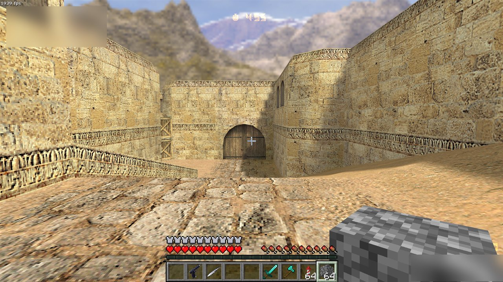
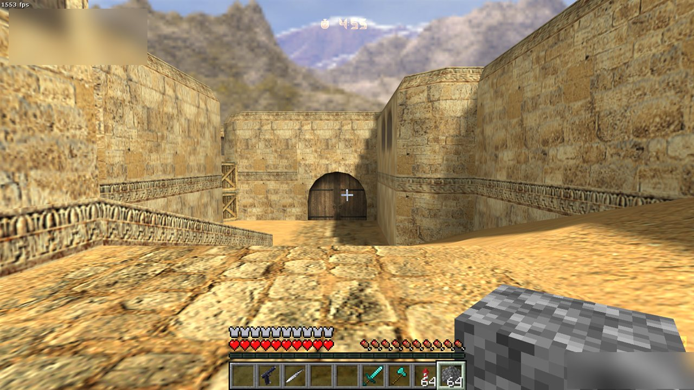
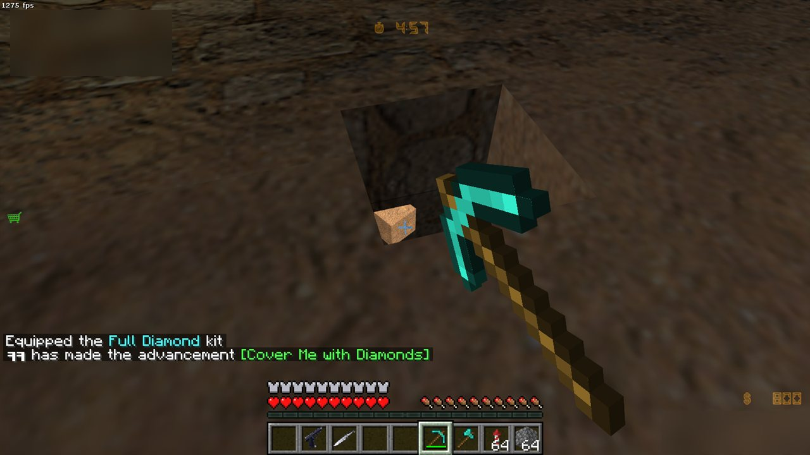
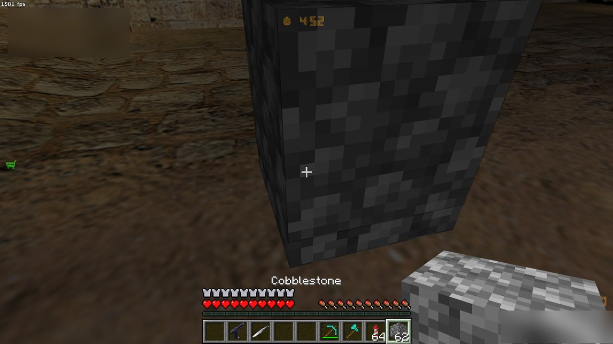
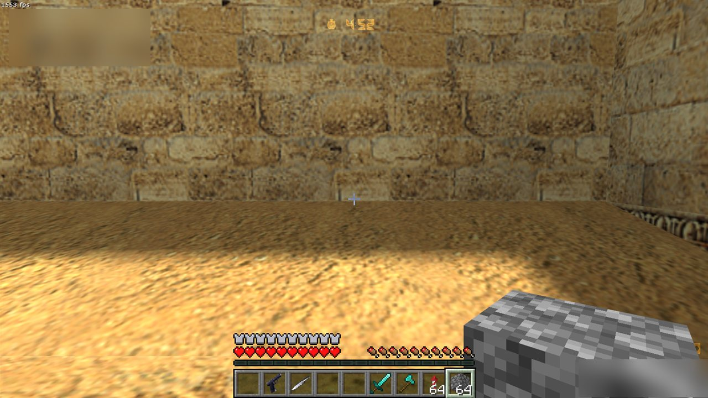
The survival inventory (Shift+E) implements Minecraft's click semantics. Left-click picks up, places or swaps a stack. Right-click splits a stack or places a single item. Shift-click moves a stack to its preferred destination: armor to the armor slots, hotbar to storage and back. Picked-up items fill the hotbar first, then the 27 storage slots. Partial stacks are accepted when space is short. On death, every weapon and item the player carries is dropped.
Counter-Strike's fixed health is replaced by Minecraft's food model. Movement, jumping, attacking, taking damage and healing add exhaustion. Every 4.0 points of exhaustion consumes one point of saturation, or one point of food when saturation is exhausted. With full food and saturation, the player heals every 10 ticks. At 18 food or more, the player heals every 80 ticks. At zero food, the player starves down to one health point. A golden apple grants Regeneration II for 5 s and 4 absorption points.
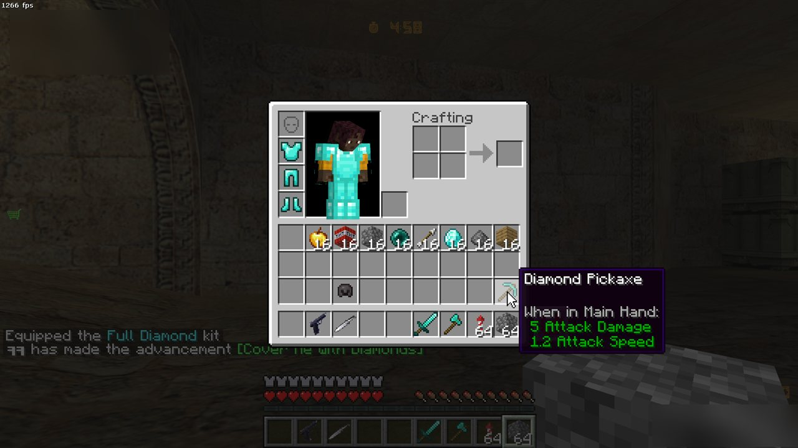
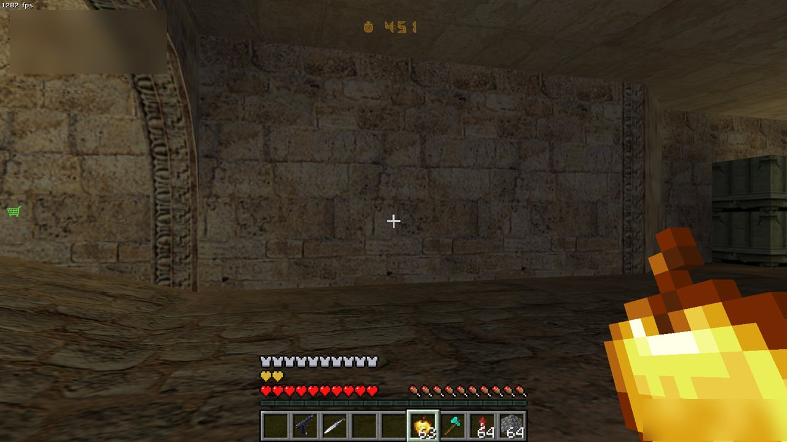
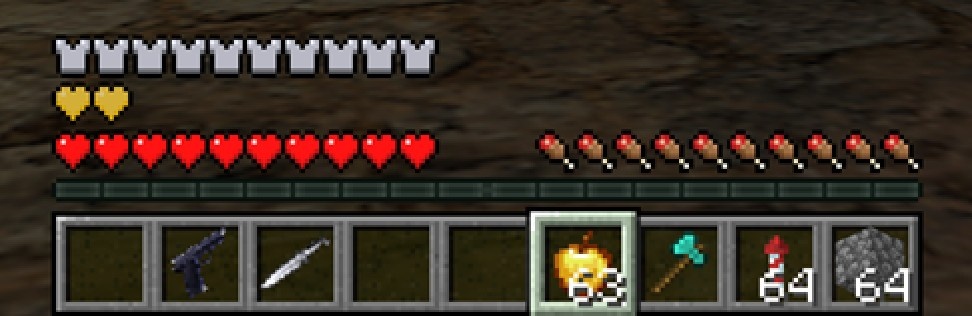
tools/assets/gun_icons.py.Three launchers in the repository root start a local, offline listen server with bots:
PLAY_MineStrike_dust2.bat: classic mode. The original de_dust2 with standard rounds, bomb sites, buy zones and player models, and the map can be excavated.PLAY_Minecraft_dust2.bat: de_dust2 converted to 123 × 141 × 37 Minecraft blocks, with mobs.PLAY_classic_dust2_with_Minecraft_items.bat: the unmodified map with the Minecraft items and HUD only.Setup requirements are listed in README.md. Counter-Strike's files come from the user's own installation. Minecraft assets are downloaded from Mojang's servers for the user's own account. Neither is included in this repository.
| B | Counter-Strike buy menu; in creative mode, the Minecraft creative inventory |
| Shift+E | Survival inventory |
| 1–5 / 6–9 | Counter-Strike weapons / Minecraft hotbar |
| Mouse 1 | Attack, or hold to mine |
| Mouse 2 | Use: place, open, eat, equip, throw, fire |
| Space while falling | Elytra glide |
| F5 | Camera: first person, rear, front |
| G | Drop the held item |
Each recording is a scripted scenario executed in the unmodified engine and captured from the game window. The server drives the local player. No frame was edited.
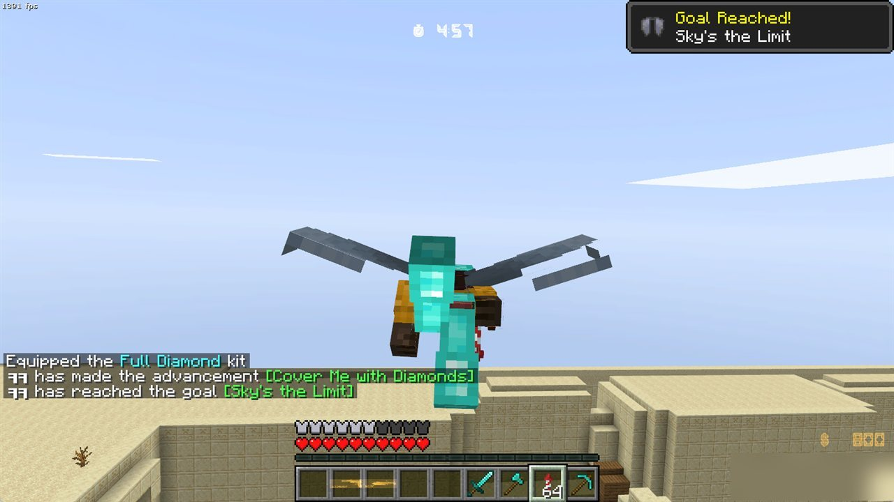
ElytraModel.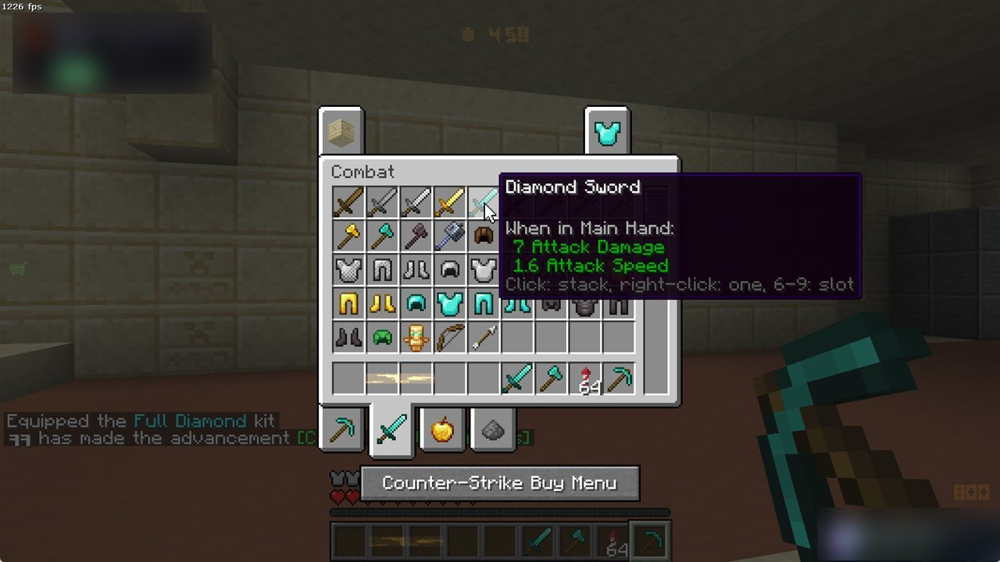
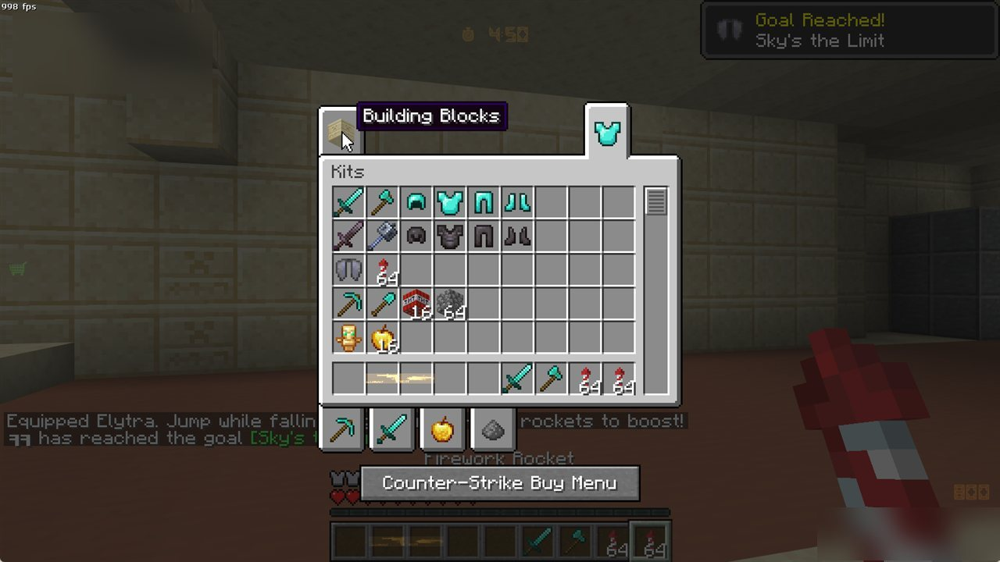
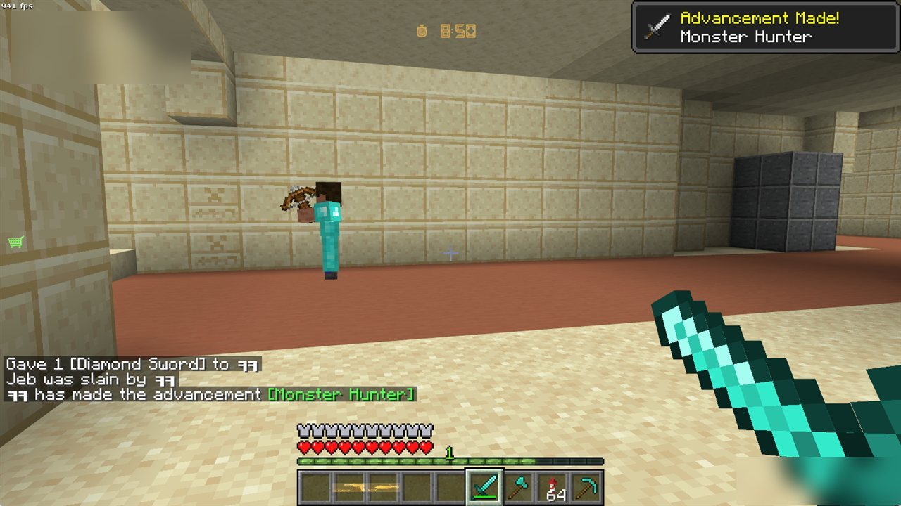
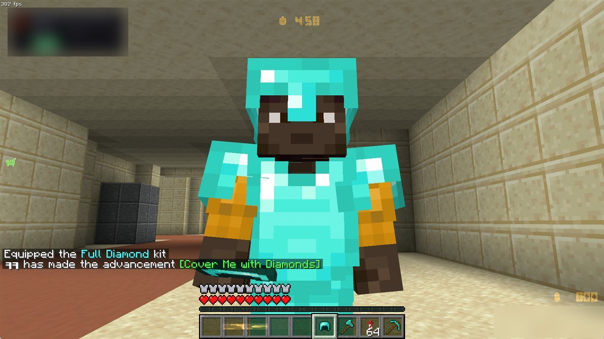
HumanoidModel with armor layers.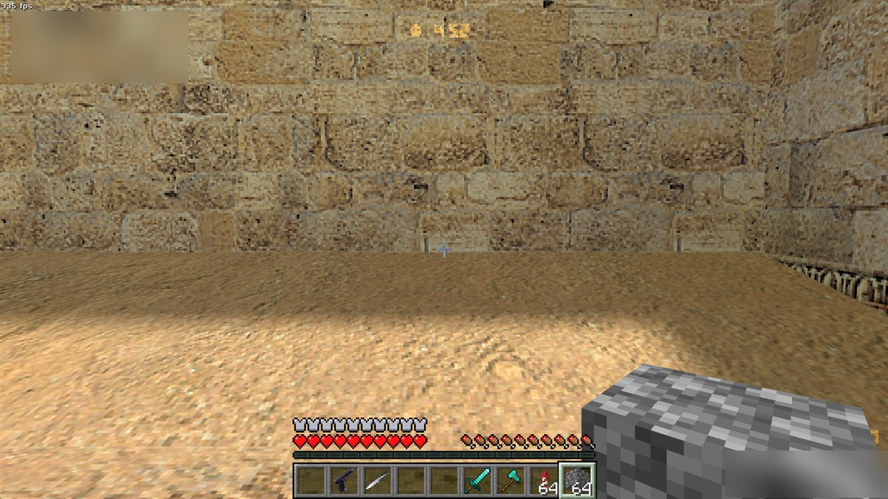
clang-cl and lld cross-compile 32-bit Windows libraries against the MSVC runtime and Windows SDK, obtained with xwin. No Visual Studio installation is required. CMake and Ninja drive the build.
A voxelizer samples BSP point contents at half-block resolution, keeps thin walls watertight, and maps WAD textures to blocks. It then compiles a sealed shell map with SDHLT for the engine to load. Bot navigation meshes are generated from the voxels.
Collision was checked against the engine directly. With the engine running the real de_dust2, mc_bsptest fires randomized traces through both the engine's trace function and the modification's, and compares the end position, the start-solid flag, the surface normal and the point contents. Each gameplay feature has a scripted scenario. The server drives the local player and logs checkpoints, and a runner captures the game window at each one. Where noted, input is real: key presses and mouse clicks sent to the game window.
| Collision measurement | Result |
|---|---|
| Hull traces, all four hulls, intact map (4,000) | 3,996 identical end positions (99.9%). The 4 disagreements, and the 3 start-solid disagreements, occur only on traces that start inside solid space. |
| Cost per trace, intact map | 0.74 µs for the modification, 0.47 µs for the engine |
| Carve-aware path against the engine, point hull (250) | 0 disagreements |
| Carve-aware path against the engine, hulls 1–3 (750) | 131 disagreements (17.5%). These come from player-clip brushes, which exist only in hulls 1–3 and are absent from the pieces derived from hull 0. |
| Cost per trace, carve-aware path | 52.7 µs, used only for contacts in excavated space |
| Scenario | Observation | Result |
|---|---|---|
views | Eight reference views drawn by the engine and by the modification. The geometry and textures agree; the modification's output is slightly darker, by an engine-to-modification ratio of about 1.05 in red, 1.1 in green and 1.2–1.3 in blue. | PASS |
pit | Real key input: entering a newly excavated pit, moving along its edge, leaving it | PASS |
place | Real right-clicks place blocks on floors and walls | PASS |
inv | Pick up and place stacks, Shift-click armor into its slots, delete an item in the disposal slot | PASS |
food | Bread raises food from 14 to 19. Natural regeneration raises health from 85 to 90 within 4 s. A golden apple adds 20 absorption HP. | PASS |
combat | Damage and cooldown, death, experience orbs, level-up, advancement | PASS |
flight / elytra | Glide physics; firework boost to about 1,300 units/s | PASS |
mine / tnt | Break times, drops, crack overlay, explosion crater | PASS |
creeper / creeperwatch | Fuse after 1.5 s; 100→54 HP through diamond armor; in a live round the creeper crossed the map to the player | PASS |
enderman | Bullet hits cause a teleport and no damage; three sword hits kill | PASS |
items | Ender pearl teleport (−25 HP); the totem survives 500 damage | PASS |
gui | Real clicks through the creative inventory, including a kit and a number-key transfer | PASS |
changelevel | de_dust2 → mc_dust2 → de_dust2 with the inventory preserved | PASS |
userflow | Real input from the launcher through the MOTD, team selection, spawn and inventory | PASS |
+alt1 binding described in section 1.HUD_Frame argument described in section 1.